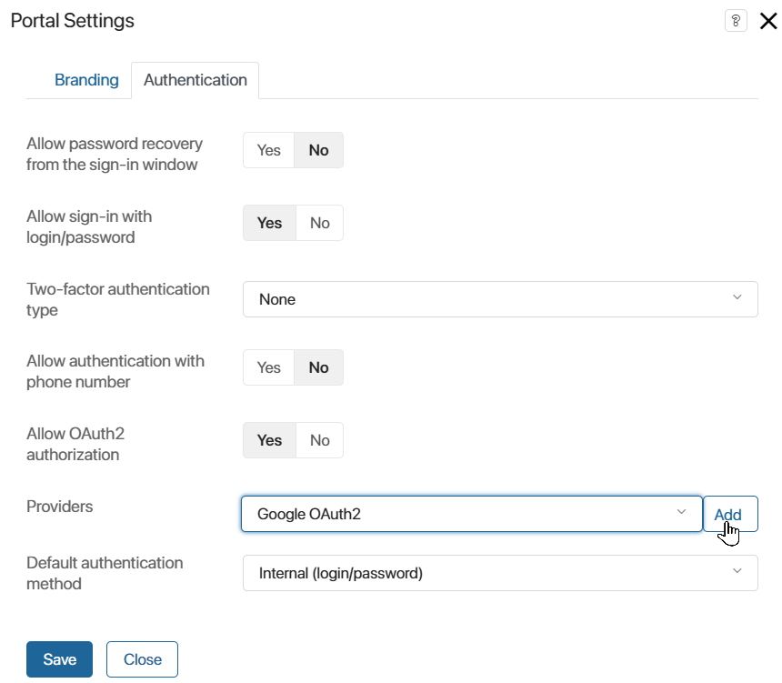

По умолчанию авторизация пользователей в ELMA365 или на внешнем портале осуществляется по логину и паролю. Вы можете реализовать регистрацию и авторизацию пользователей через сторонние сервисы, например, соцсети, учётные записи Google или Яндекс. Для этого необходимо создать и настроить пользовательский модуль OAuth2. После подключения модуля новый способ авторизации станет доступен в ELMA365. Также вы сможете подключить модуль к каждому порталу компании. Кроме того, вы можете настроить модуль для авторизации при подключении почты.
начало внимание
Создавать и настраивать модули могут только пользователи, включённые в группу Администраторы.
конец внимание
Создание и настройка модуля
Чтобы создать новый модуль, перейдите в Администрирование > Модули, нажмите кнопку + Модуль и в открывшемся окне выберите опцию Создать. Заполните информацию о модуле и нажмите кнопку Создать. Подробнее читайте в статье «Создание модуля».
Добавление обязательных настроек
Добавьте в модуль OAuth2 обязательные настройки. Это глобальные параметры, которые будут использоваться в скриптах модуля.
Перейдите на вкладку Настройки, нажмите + Добавить и создайте необходимое количество свойств, в которых будут храниться значения настроек.
Отображаемые названия свойств могут быть произвольными. Имена же свойств должны совпадать с именами, указанными ниже в скобках, поскольку они используются для распознавания типа модуля.
Для корректной работы модуля авторизации в системе обязательно добавьте следующие свойства типа Строка:
- ID приложения (
client_id) — идентификатор приложения на стороне внешнего сервиса, которое будет запрашивать данные для авторизации. Выдаётся при регистрации приложения в стороннем сервисе; - Защищённый ключ (
client_secret) — секретный ключ приложения. Выдаётся при регистрации приложения в стороннем сервисе. Вместе сclient_idиспользуется для получения токена доступа к API стороннего сервиса; - Адрес аутентификации (
auth_url) — адрес страницы авторизации в стороннем сервисе, на которую пользователь будет перенаправлен из приложения; - Адрес получения токена (
token_url) — адрес на стороне сервиса, на который будет отправлен запрос для получения ключа доступа к API (access‑токена). В запросе указываютсяclient_idиclient_secret; - Права доступа (
scopes) — права доступа, которые будут предоставлены приложению в стороннем сервисе по access‑токену. Названия прав доступа разделяются пробелом. Обязательно необходимо запрашивать доступ к сведениям, которые позволяют однозначно идентифицировать пользователя, например, к адресу электронной почты; - Автоматическая регистрация (
auto_signup) — свойство типа Выбор «да/нет». Если параметр установлен в значение Да, внутренние или внешние пользователи, которые ранее отсутствовали в системе, автоматически добавятся в ELMA365 при авторизации. В этом случае в карточке пользователя отобразится только его электронный адрес.
Вы можете добавить свои свойства, их имена могут быть любыми.
Если все свойства указаны, перейдите на вкладку Основные и нажмите Сохранить.
Настройка страницы подключения модуля
По умолчанию все созданные настройки добавляются на страницу подключения модуля. Пользователь увидит их, нажав на название модуля в разделе Администрирование.
Рекомендуем отображать на странице подключения только те параметры, значения которых вводятся пользователем при настройке модуля. Чтобы узнать, какие параметры настраиваются вручную, а какие задаются по умолчанию, обратитесь к документации для разработчиков сервиса сторонней авторизации.
Рассмотрим настройку страницы подключения на примере модуля для авторизации через Google. Список его параметров приведён в предыдущем разделе. По умолчанию все они отображаются на странице модуля.
Чтобы страница подключения содержала только настройки, задаваемые пользователем вручную, выполните следующие действия:
- На странице модуля перейдите на вкладку Настройка и нажмите кнопку Изменить форму. Откроется дизайнер интерфейсов, в котором необходимо отредактировать форму настроек модуля.

- Удалите стандартную форму элемента: выберите виджет, нажмите на значок корзины и подтвердите удаление.
- Так как свойства ID приложения (
client_id) и Защищённый ключ (client_secret) заполняются вручную, вынесите их на форму. Для этого справа откройте вкладку Свойства и перетащите их на поле для моделирования. - Сделайте добавленные поля обязательными для заполнения. Для этого выберите нужное свойство на поле для моделирования и нажмите значок шестерёнки. В окне настроек укажите обязательность и нажмите Сохранить.

- На верхней панели дизайнера интерфейсов нажмите Опубликовать.
Теперь на странице подключения модуля отобразятся только параметры, которые указываются вручную.

- Для остальных параметров задайте значения по умолчанию. Для этого в настройках модуля перейдите на вкладку Настройки, нажмите на название свойства и в открывшемся окне укажите значение в поле По умолчанию.

Например, в модуле авторизации Google задайте следующие значения:
auth_url— https://accounts.google.com/o/oauth2/v2/auth;
token_url— https://www.googleapis.com/oauth2/v4/token;
scopesдля авторизации через Google — https://www.googleapis.com/auth/userinfo.email;
scopesдля авторизации в почтовом сервисе Gmail — https://mail.google.com/ https://www.googleapis.com/auth/gmail.send.
- В настройках модуля перейдите на вкладку Основные и нажмите Сохранить.
Добавление скрипта
На следующем шаге в модуль нужно добавить скрипт. В нём считываются значения настроек модуля, затем из них формируется запрос на авторизацию. Он отправляется на сторонний сервис, который возвращает идентификатор пользователя. Идентификатор сравнивается со значением в базе данных ELMA365, и при совпадении пользователь авторизуется в системе.
Внутри скрипта отправка запроса и получение ответа от стороннего сервиса реализованы в методе oauth2_profile. Обратите внимание, что имя метода менять нельзя, поскольку в системе он используется для распознавания типа модуля.
Чтобы добавить скрипт:
- На странице модуля перейдите на вкладку Методы API и нажмите Редактировать. Откроется редактор методов.
- Перейдите на вкладку Скрипты и напишите код по следующему шаблону:
interface AccessTokenData { // Структура данных для хранения access-токена стороннего сервиса
access_token: string;
refresh_token: string;
token_type: string;
expires_in: number;
}
interface OAuth2Profile { // Структура данных для хранения идентификатора пользователя
user_id: string;
}
interface OAuth2ResponseFail { // Структура данных для хранения сообщения об ошибке
error: string;
error_description: string;
}
async function oauth2_profile (tokenData: AccessTokenData): Promise<OAuth2Profile | OAuth2ResponseFail> {
// Код метода, который возвращает идентификатор пользователя, или текст ошибки из OAuth2-провайдера
}
Пример скрипта для модуля авторизации через Google
interface AccessTokenData { |
- Сохраните и опубликуйте скрипт.
Настройка на стороне внешнего сервиса
Для работы модуля авторизации необходимо настроить веб-приложение на стороне провайдера и связать его с модулем. Рассмотрим создание приложения на примере интеграции с Google:
- Перейдите в Google Cloud Platform.
- Создайте проект или выберите существующий. Подробнее о создании проектов читайте в официальной документации Google.
- Настройте страницу запроса разрешений. Подробнее читайте в официальной документации Google.
- Перейдите в раздел Credentials, в верхней части страницы нажмите +Create credentials и в выпадающем меню выберите OAuth client ID.
- В поле Application type выберите Web application и укажите название приложения.
- В блоке Authorized redirect URIs нажмите +Add URI и введите адрес, на который пользователь перенаправится при успешной авторизации. Формат адреса: <host>/_oauth2/post-message?provider=XXXXXXXX-XXXX-XXXX-XXXX-XXXXXXXXXXXX. В качестве <host> вставьте адрес вашей компании ELMA365. В качестве ID провайдера используйте идентификатор модуля. Чтобы получить его, откройте страницу модуля и в адресной строке браузера скопируйте набор символов после “ext_”.
начало примечание
Примечание
Чтобы пользователь мог войти в ELMA365, используя как базовый адрес компании, так и дополнительный (алиас), в настройках на стороне внешнего сервиса укажите два соответствующих URL‑адреса для перенаправления.
Если вы настраиваете интеграцию с почтовым сервисом, введите адрес для перенаправления в формате <host>/_oauth2/post-message.
конец примечание
- Нажмите Create.
- В открывшемся окне скопируйте значения Client ID и Client secret.
- Перейдите в ELMA365, откройте страницу модуля и включите его.
- Вставьте в поле ID приложения значение Client ID, в поле Защищённый ключ — Client secret.

- Сохраните настройки.
Модуль готов к использованию. Теперь пользователи смогут войти в ELMA365 с помощью учётной записи подключённого сервиса, если OAuth2‑авторизация разрешена в настройках безопасности.
Вы также можете настроить вход через сторонний сервис для внешнего портала. Работа модуля при авторизации клиентов на портале описана в разделе «Пример работы модуля для входа на портал».
Настройка logout в модуле OAuth2
Для обеспечения дополнительной безопасности вы можете настроить механизм logout в пользовательском модуле OAuth2. С помощью этого механизма пользователь, выходя из профиля в ELMA365, также будет выходить из привязанной учётной записи настроенного провайдера.
Чтобы настроить механизм logout в модуле, выполните следующие действия:
- На странице модуля перейдите на вкладку Методы API и нажмите Редактировать. Откроется редактор методов.
- Перейдите на вкладку Скрипты и подключите интерфейс logout:
interface OAuth2LogoutResponse {
redirect_url: string;
}
- Затем реализуйте метод
oauth2_logout:
async function oauth2_logout(): Promise<OAuth2LogoutResponse | OAuth2ResponseFail> {
return <OAuth2LogoutResponse> {
redirect_url: "https://my_idp.com/logout"
};
}
В качестве параметра redirect_url укажите адрес настроенного провайдера. На указанный адрес из ELMA365 будет отправляться запрос о выходе из учётной записи.
- Сохраните и опубликуйте скрипт.
После этого пользователь, нажавший кнопку Выйти в ELMA365, будет перенаправлен на страницу выхода из учётной записи в настроенном провайдере OAuth2.
Также вы можете настроить на стороне провайдера OAuth2 обратную переадресацию на страницу авторизации в ELMA365 после выхода из системы.
Привязка учётной записи OAuth2 к профилю в скриптах
С помощью скриптов вы можете управлять привязкой профиля пользователя ELMA365 к учётной записи настроенного провайдера OAuth2. Для этого доступны следующие методы:
createWithAuthData— метод позволяет создать нового пользователя в ELMA365 и автоматически связать его с существующей учётной записью в провайдере OAuth2. Добавленные с помощью данного метода пользователи сразу получают статус Активный.
Обратите внимание, пользователь, добавленный таким способом, сможет авторизоваться в ELMA365 только с помощью провайдера OAuth2. Другие методы авторизации будут недоступны;
addOAuth2Data— метод позволяет привязать к профилю существующего в ELMA365 пользователя учётную запись настроенного провайдера OAuth2. После привязки пользователь сможет авторизоваться в ELMA365, используя данные провайдера. Данный метод аналогичен ручному добавлению учётной записи провайдера OAuth2 в настройках профиля пользователя на вкладке Аутентификация;removeOAuth2Data— метод позволяет отвязать учётную запись провайдера OAuth2 от профиля пользователя ELMA365. Данный метод аналогичен ручному удалению учётной записи из профиля пользователя.
Подробнее о работе с перечисленными методами читайте в справке ELMA365 TS SDK в статье «Объект пользователей».
Настройка модуля для авторизации в почтовых сервисах
Модуль OAuth2 можно использовать при настройке интеграции с почтовым ящиком в линиях и при подключении персональной почты к профилю пользователя. В этом случае не требуется ввод пароля от почты в ELMA365 — авторизация происходит на стороне почтового сервиса, что обеспечивает удобство для пользователя и дополнительную безопасность учётных данных.
Чтобы модуль подходил для привязки почтового ящика, добавьте в него обязательные свойства. Для этого перейдите к управлению модулем, затем на вкладке Настройки:
- Создайте свойства типа Строка, обязательные для любого модуля OAuth2. При этом укажите имена свойств, приведённые ниже в скобках, поскольку они используются для распознавания типа модуля:
- ID приложения (
client_id); - Защищённый ключ (
client_secret); - Адрес аутентификации (
auth_url); - Адрес получения токена (
token_url); - Права доступа (
scopes).
- ID приложения (
Подробное описание свойств приведено выше.
- Добавьте свойство типа Строка, уникальное для модулей авторизации в почте — Тип авторизации
(auth_type). В нём указывается используемый метод авторизации — OAUTHBEARER или XOAuth2, возможные значения — bearer и xoauth2. Если поле оставлено пустым или введено некорректное значение, по умолчанию используется метод OAUTHBEARER. Рекомендуем использовать XOAuth2 для провайдеров Яндекс Почта и Mail.ru.
Вы можете установить в настройках свойства значение по умолчанию, чтобы не указывать тип авторизации вручную на странице подключения модуля.
Добавление скриптов для работы модуля не требуется.
После включения модуля его можно использовать при подключении почтового ящика в профиле пользователя и в настройках линий. Подробнее читайте в статьях «Подключить почту» и «Подключить электронную почту к линии».
Пример работы модуля для входа на портал
Рассмотрим подробнее использование модуля для сервиса Google на примере регистрации и авторизации на внешнем портале компании. О том, как создать такой модуль, читайте в разделе «Создание и настройка модуля».
Предварительная настройка
Чтобы пользователь мог входить на внешний портал с помощью учётной записи стороннего сервиса, нужно указать модуль OAuth2 в настройках авторизации портала:
- Перейдите в раздел, в котором настроен портал.
- Нажмите на портал в левом меню и на открывшейся странице выберите значок шестерёнки рядом с его названием.
- В окне настройки на вкладке Авторизация разрешите OAuth2-авторизацию и добавьте созданный модуль в список провайдеров.

В целях безопасности можно запретить вход на портал по логину и паролю. Для этого в поле Разрешить вход по логину / паролю установите переключатель в положение Нет. В этом случае пользователи смогут авторизоваться на портале только через сторонний сервис.
- Сохраните настройки портала.
Принцип работы модуля
Разберём, как работает модуль:
- Клиент, который ранее не использовал портал, переходит по ссылке-приглашению и в окне регистрации нажимает Использовать другой метод для регистрации.

- В окне доступных сторонних сервисов выбирает опцию Google OAuth2.

- В открывшемся окне авторизации Google указывает нужный аккаунт и входит в него.
- Затем пользователь разрешает доступ к данным учётной записи.

- Появляется окно приглашения на портал, в котором пользователь вводит фамилию, имя и отчество и нажимает Сохранить.
- Регистрация завершена. В следующий раз при авторизации на портале пользователь нажимает Войти другим способом и входит в свой аккаунт Google.